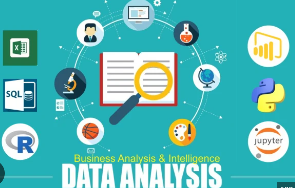

Embracing the ever-evolving
data landscape.
Conquering the challenges of data science and analytics
My fascination with data science stems from its ability to transform raw information into actionable intelligence. Data is the new oil, and analytics is the combustion engine that drives businesses forward. By harnessing the power of data, organizations can gain a deeper understanding of their customers, optimize their marketing campaigns, improve operational efficiency, and ultimately achieve their strategic goals.
In today's data-driven world, the ability to harness the power of information is essential for success. Data science and analytics have emerged as transformative tools, empowering businesses to make informed decisions, optimize operations, and gain a competitive edge. As an intermediate-level data analyst with a keen interest in data science, I am passionate about exploring the elaboration of data and its profound impact on the modern business landscape.
My expertise lies in utilizing Python, SQL, Power BI, and Excel to effectively clean, analyze, and visualize data from diverse sources. I am proficient in extracting meaningful insights from complex datasets, uncovering hidden patterns, and translating data into actionable strategies.
My love affair with data began with the alluring whispers of Python. Its elegance, versatility, and undeniable coolness had me hooked. I enjoyed learning from tutorials, wrestled with pandas, and played with NumPy. Python became my playground, a world where I could conjure visualizations and bend statistics to my will. But soon, the siren call of SQL lured me into its structured embrace. Oh, the joy of crafting those perfect queries, watching messy data transform into sparkling insights! It was like a treasure hunt, each line of code a shovel unearthing buried gems.
And then, there was Power BI, the visual storyteller extraordinaire. It took my data narratives and painted them on dazzling canvases, turning numbers into eye candy that even my grandma could understand (almost).
Now, I'm not claiming to be a master of any of these tools. I'm still that intermediate-level warrior, constantly honing my skills, battling my way through error messages, and emerging victorious (sometimes). But what I lack in experience, I make up for in sheer enthusiasm. I'm that overcaffeinated kid in the data science classroom, the one with the million questions and the insatiable appetite for knowledge